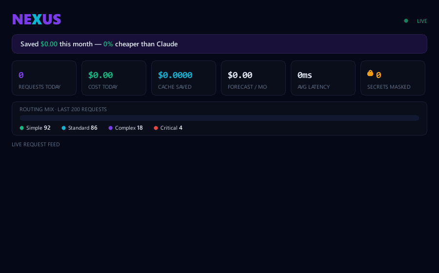

curl -fsSL https://raw.githubusercontent.com/lynuxis2026-pixel/nexus-proxy/main/install.sh | shirm https://raw.githubusercontent.com/lynuxis2026-pixel/nexus-proxy/main/install.ps1 | iexnexus code # starts NEXUS + launches Claude Code through it
OpenRouter routes to the cheapest provider. NotDiamond predicts a model from the crowd's preferences. NEXUS is the only one that learns which provider wins your tasks, verifies the cheap answer before trusting it, redacts secrets before they ever leave your machine, and proves it by benchmarking every provider on your own traffic.
Routing to cheaper models is a commodity. NEXUS owns the quadrant nobody else occupies — local, private, measurable, self-learning.
| Capability | NEXUS | OpenRouter | claude-code-router | Cloud gateways |
|---|---|---|---|---|
| Cheapest-capable routing | ✓ | ✓ | manual | ✓ |
| Runs 100% local (single binary) | ✓ | ✗ cloud | ~ Node | ✗ cloud |
| Privacy firewall — mask secrets before egress | ✓ | ✗ | ✗ | enterprise |
| Benchmark on your own traffic | ✓ | ✗ | ✗ | ✗ |
| Learns your routing (adaptive) | ✓ | generic | ✗ | ✗ |
| Cheap-first cascade with verification | ✓ | ✗ | ✗ | ✗ |
| No token markup | ✓ | ✗ fee | ✓ | varies |
| Live cost dashboard | ✓ local | cloud | config UI | cloud |
Free tiers handle the simple majority, the cache makes repeats free, off-peak halves the standard tier, and the cascade keeps premium calls rare. It stacks up fast.
Illustrative — your mix differs. Measure your real number: nexus report → “$X saved · N secrets masked · 0 leaked.”
Masks API keys, secrets & PII before a request leaves for any model, restored in the response. Use a cheap model on NDA'd code.
nexus bench replays your real requests at every provider and ranks them by cost × latency × agreement — pick by measuring, not guessing.
Learns which provider wins each of your task types from real outcomes and reorders routing — it gets smarter the more you use it.
Tries the cheapest capable model, verifies the output, and escalates to Claude only on failure. Real savings, with a safety net.
Click any request to see the full prompt/response, then replay it against another provider to compare cost and output side-by-side.
Speaks both the Anthropic and OpenAI APIs, so Claude Code, Cursor, aider and Cline all route through one proxy — one env var.
Point a team at one NEXUS: a shared cache everyone benefits from, plus a per-person savings leaderboard. No accounts.
nexus topEvery request, model, latency and cost in real time — plus a routing-mix bar and a “secrets masked · 0 leaked” trust card. In the browser, or a dependency-free terminal TUI.
Linux · macOS · Windows, tested on each. Pure-Go SQLite — no Python, no Docker, no Postgres, no cloud, no token markup, no supply-chain surface.
…plus budget caps + webhook alerts, declarative routing rules, per-request cost guardrails, an MCP server (nexus mcp), nexus doctor & key auto-discovery.
Routing to cheaper models is the commodity part — NEXUS does it too. The difference is everything around it: a privacy firewall that masks secrets before they leave your machine, nexus bench that proves which cheap model is good enough on your traffic, adaptive routing that learns your best provider per task, and a local single binary with no cloud and no token markup.
NEXUS runs entirely on your machine. The only thing that leaves is the LLM call to the provider you configured — and with --redact on, detected secrets/PII are masked before that call and restored in the response. No telemetry, no cloud, your keys stay local. Want zero egress? Route to Ollama and stay fully offline.
That's the point of the cheap-first cascade: it tries the cheap model, verifies the output, and escalates to Claude on failure. Complex/critical tasks start premium — and nexus bench lets you measure agreement on your real prompts before trusting a model.
Yes. NEXUS speaks both the Anthropic and OpenAI APIs, so any of them route through it with a single env var.
No markup, no cloud, no account. Your provider keys live in ~/.nexus/config.toml (or env: refs) on your machine.